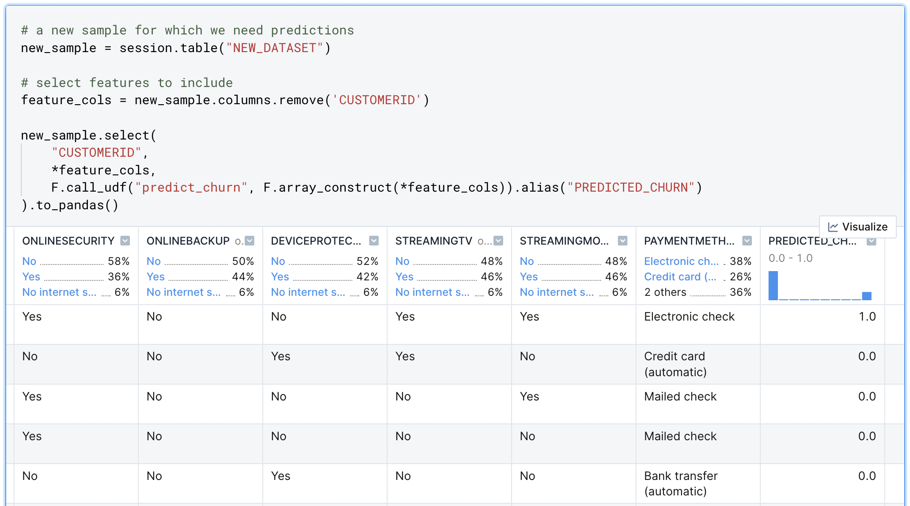

What is Snowpark?
Machine learning workflows generally involve model prototyping, evaluation, and deployment. These typically require different languages, technologies, compute environments, and interfaces. Snowpark for Python brings these disparate components together under a single Python library—greatly simplifying end-to-end machine learning workflows.
Snowpark provides a Python interface for interacting with data in the warehouse—without moving it to the client (i.e., the notebook). In addition, Snowpark allows data scientists to execute locally developed Python code directly in the warehouse. This means that model training (and returning predictions) can be executed from a notebook but run on the server (i.e., the warehouse)—without changing the user's code.
What is Deepnote?
A major aspect of any ML workflow is exploratory data analysis (EDA). During model development, data scientists need rapid insights for the purposes of feature selection, feature engineering, and hyperparameter tuning. Deepnote's collaborative data notebook is an interoperable Python and SQL environment that includes a suite of no-code tools to help with EDA. To learn more about how Deepnote helps with EDA and its tight integration with Snowflake, see this quickstart.
Using Snowpark & Deepnote together
Deepnote and Snowpark solve the common pain points that data scientists experience when developing and deploying machine learning models. As shown in the image below, Snowpark and Deepnote work well together to accomplish transformation, EDA, and machine learning tasks.
In this quick-start guide, we will build a complete ML workflow with Deepnote and Snowpark. Specifically, we will (1) prototype a churn prediction model using Deepnote's EDA solutions and (2) use Snowpark to evaluate and deploy the model inside Snowflake's DWH.

Prerequisites
- Familiarity with basic Python and SQL
- Familiarity with data science notebooks (see this guide for an introduction to Deepnote)
What You'll Learn
Join us in this guide where we develop a churn prediction model using Scikit-learn. We will learn the following:
- How to build a generalizable ML workflow that covers model prototyping, model evaluation, and deployment.
- How to use Snowpark's DataFrame API to examine data from your Snowflake warehouse without moving it to the notebook.
- How to train and deploy a classification model directly in the warehouse.
What You'll Need
- A free Deepnote account.
- A Snowflake account with admin access and 3rd party packages enabled.
- The telecommunications parquet data file here.
To connect a Snowflake database to a Deepnote project, open the Snowflake integration modal and supply the associated Snowflake credentials (i.e., account, username, password). Note that the connection parameters to Snowflake are stored in the notebook as Python environment variables but can only be viewed by the workspace Admin.

Note that once you are connected to Snowflake, you will be able to browse your schema directly from Deepnote and query your tables with SQL blocks. For more detailed information on using Deepnote and Snowflake together, please see this quickstart.
After connecting your Snowflake integration, click the "How to use" button on the newly created integration in the right sidebar. As you can see in the image below, you can insert a snippet of code into the notebook to help you get started with Snowpark. This is simply boilerplate code that will help you to initialize your Snowpark session.

Similar to Pandas and PySpark, Snowpark's main abstraction is the DataFrame. The SQL commands and functions that you require for selecting, joining, and aggregating tables are methods on the DataFrame object. And since this can all be done in pure Python, this opens up new possibilities for interacting with your tables (e.g., using Python control structures). In addition, data scientists that prefer Python over SQL can still can have full control over the DWH.
For example, the following code snippet uses a standard Python for loop to remove spaces from the column names directly on a view. Snowpark's session and DataFrame methods provide convenient access and manipulation of the data in the warehouse—including writing back to new tables as shown below.
# create a temporary view on raw data to use for transformation
session.table("RAW_DATA").create_or_replace_temp_view('RAW_STAGE')
df_raw_stage = session.table("RAW_STAGE")
# loop through columns and rename them
for c in df_raw_stage.columns:
df_raw_stage=df_raw_stage.rename(c, c.replace(' ', ''))
# write the new table to the warehouse
df_raw_stage.write.mode('overwrite').saveAsTable('RAW_STAGE')
To further highlight how the DataFrame object abstracts away common SQL tasks, here is an example of a two-way GROUPBY followed by an aggregation and sorting. The resulting churn_exploration object can be converted into an in-memory Pandas DataFrame with the .to_pandas() method.
churn_exploration = (
dfJoin.group_by(["CONTRACT", "CHURNVALUE"])
.count()
.sort(["CONTRACT", "CHURNVALUE"])
)
It is important to note that Snowpark operations are executed lazily on the server, which reduces the amount of data transferred between your notebook and the Snowflake database.
After EDA, we enter a prototyping phase. Typically, this involves feature selection and generation, as well as training and evaluation of a model before productionizing it. One generalizable approach that is possible with Snowpark is to prototype your ML models in the notebook (perhaps on a sample of data), then, move that same code to the warehouse and run it on the full dataset.
In the snippet below, we have a function that trains a churn detection model as well as evaluates both the train and test sets. Interestingly, the function can be run using the notebook's compute (in the client); however, it can also be registered to run in the warehouse by using Snowflake's stored procedures.
def train_churn_prediction_model(session: Session, features_table: str) -> Variant:
from sklearn.model_selection import GridSearchCV
from sklearn.model_selection import train_test_split
from sklearn.metrics import confusion_matrix, classification_report
from sklearn.ensemble import RandomForestClassifier
from sklearn.compose import make_column_transformer
from sklearn.preprocessing import OneHotEncoder
from sklearn.preprocessing import MinMaxScaler
from sklearn.pipeline import make_pipeline
from sklearn.metrics import balanced_accuracy_score
import os
from joblib import dump
# Load features
df = session.table(features_table).to_pandas()
# gather all categorial columns for preprocessing
cat_vars=df.select_dtypes(include=['bool', 'object']).columns.to_list()
cat_vars.remove('CUSTOMERID')
# gather all numerical columns in case we want them for preprocessing
num_vars = df.select_dtypes(exclude=['bool', 'object']).columns.to_list()
num_vars.remove('CHURNVALUE');
# all desired columns (removing ID and target column)
x_cols=cat_vars+num_vars
# split the data into train and test
X_train, X_test, y_train, y_test = train_test_split(
df[x_cols],
df['CHURNVALUE'],
test_size=0.2
)
# preprocessing columns
col_trans = make_column_transformer(
(OneHotEncoder(), cat_vars),
#(MinMaxScaler(), num_vars),
remainder='passthrough')
#support_vect=svm.SVC(gamma = 'auto', probability=True)
random_forest=RandomForestClassifier()
# fit the model
pipeline = make_pipeline(col_trans, random_forest)
# Use GridSearch to find the best fitting model based on 10 folds
model = GridSearchCV(pipeline, param_grid={}, cv=10)
model.fit(X_train, y_train);
# Upload trained model to a stage
model_output_dir = '/tmp'
model_file = os.path.join(model_output_dir, 'model.joblib')
dump(model, model_file)
# Let's first create a stage to store the artifacts.
session.sql('create stage if not exists my_models').collect()
session.file.put(model_file, "@my_models", overwrite=True)
# Return model R2 score on train and test data.
return {"R2 score on Train": model.score(X_train, y_train),"R2 score on Test": model.score(X_test, y_test)}
# call the function on the client (passing in the session object and dataset)
train_churn_prediction_model(session,"TELCO_DATASET")
# returns model scores. For example,
{'R2 score on Train': 0.9976, 'R2 score on Test': 0.9968}
To run this same code in the warehouse, you must first register the function as a stored procedure. Then you can simply use session.call() to indicate that you want to run a specific stored procedure (in this case function called train_churn_prediction_model) in the warehouse.
# create a stage location for the stored procedure
session.sql('create stage if not exists my_sprocs').collect()
# register the function and indicate the libraries and versions needed
session.sproc.register(
func=train_churn_prediction_model,
name="train_churn_prediction_model",
packages=['snowflake-snowpark-python==0.7.0','scikit-learn==1.0.2','joblib'],
is_permanent=True,
stage_location="@my_sprocs",
replace=True)
# call the function server side (in the warehouse)
print(session.call('train_churn_prediction_model','TELCO_DATASET'))
# returns model scores from the warehouse. For example,
{"R2 score on Test": 0.99685, "R2 score on Train": 0.9975625}
This demonstrates what makes Snowpark really shine for data scientists: take the same data science code and libraries that you use to initially develop you model, and then, without changing anything, run it directly in the warehouse—where your data live. No need to move data back and fourth (from client to server) or to change your code, languages, or interfaces.
You may have noticed that the train_churn_prediction_model also saves the model object itself to a stage in Snowflake called my_models . This is a key technique that makes the client-side function also work on the serve side. Importantly, now that the model object lives in the warehouse, it is essentially deployed into production; it can be accessed from within the notebook, or from any other Python environment that is connected to the warehouse (think dashboards, apps, reports, etc).
Methods on the model object can be called using Snowflake's user-defined functions (UDFs). Since we want to now return predictions from our model, we will have to call the model's predict() method and pass it some new samples to classify. In the snippet below, we accomplish this by (1) creating a stage (location) for the UDF, (2) importing our previously created model, and (3) writing a function that will pass new data to the model's .predict() method.
# Let's first create a stage to store the artifacts
session.sql('create stage if not exists my_udfs').collect()
session.clear_imports()
session.clear_packages()
# Add trained model as dependency
session.add_import('@my_models/model.joblib.gz')
# UDF definition
@udf(name='predict_churn', packages=['pandas','joblib','scikit-learn==1.0.2'], is_permanent = True, stage_location = '@my_udfs', replace=True, session=session)
def predict_churn(args: list) -> float:
import sys
import pandas as pd
from joblib import load
IMPORT_DIRECTORY_NAME = "snowflake_import_directory"
import_dir = sys._xoptions[IMPORT_DIRECTORY_NAME]
model_file = import_dir + 'model.joblib.gz'
model = load(model_file)
feature_cols=['GENDER',
'SENIORCITIZEN',
'PARTNER',
'DEPENDENTS',
'TECHSUPPORT',
'CONTRACT',
'PAPERLESSBILLING',
'MONTHLYCHARGES',
'TOTALCHARGES',
'TENUREMONTHS',
'PHONESERVICE',
'MULTIPLELINES',
'INTERNETSERVICE',
'ONLINESECURITY',
'ONLINEBACKUP',
'DEVICEPROTECTION',
'STREAMINGTV',
'STREAMINGMOVIES',
'PAYMENTMETHOD']
row = pd.DataFrame([args], columns=feature_cols)
return model.predict(row)
Finally, you can call this UDF as a part of a SELECT statement. For every row in that statement, the predict_churn UDF will be called (this is what makes the UDF a scalar function). For example, here we take a new set of data and pass each row to our classifier. The output is a rich DataFrame with the classifications returned in the PREDICTED_CHURN column.

Machine learning workflows generally involves model prototyping, evaluation, and deployment. These typically require different languages, technologies, compute environments, and interfaces. When we combine Snowpark with Deepnote, we satisfy these goals without sacrificing the workflows and tools that data scientists use. Further, computation can be directed client side (in the notebook) or server side (in the warehouse)—without moving data around or changing your code. This provides seamless flexibility and power when developing machine learning workflows.
Related Resources
What we've covered
We have built and deployed a churn detection model using Deepnote and Snowpark. We covered how to connect to Snowflake from Deepnote, and how you can use Snowpark to process data without transferring it to the notebook. In addition, we learned how Snowpark for Python can be used to training and deploy models directly in the Snowflake warehouse. These steps can be applied more generally to your other machine learning projects.